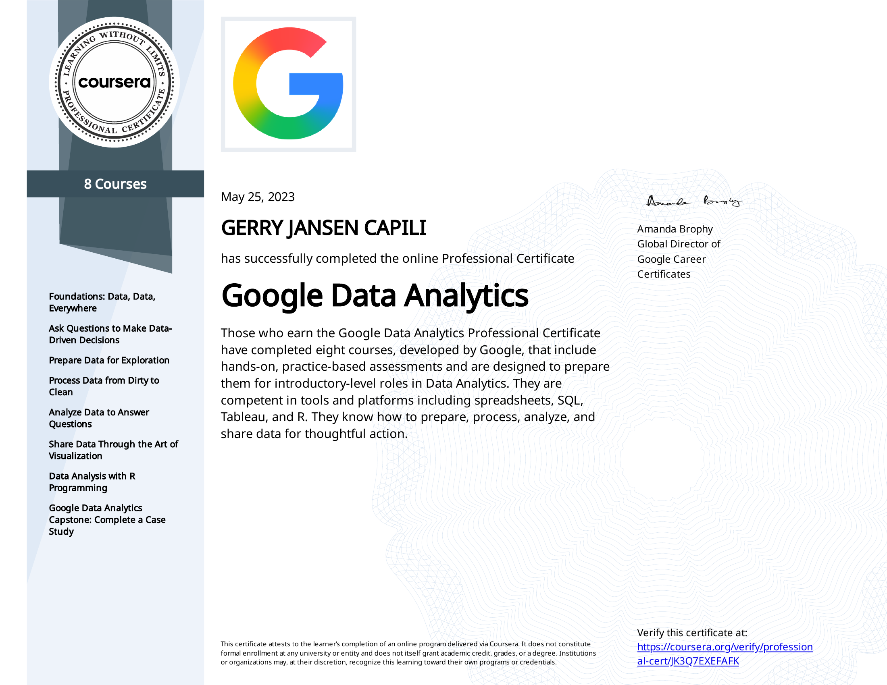

SQL Associate
DataCamp — 2026

Earned the DataCamp SQL Associate certification, demonstrating the ability to query, join, filter, and aggregate data in relational databases using SQL.
Data Analyst in Power BI
DataCamp — 2026

Completed the DataCamp Data Analyst in Power BI career track, covering data preparation, modeling, DAX, and building interactive dashboards and reports.
Data Analyst in Databricks
DataCamp — 2026

Completed the DataCamp Data Analyst in Databricks track, covering data exploration, SQL analytics, and visualization on the Databricks platform.
Understanding Data Engineering
DataCamp — 2026

Completed DataCamp's Understanding Data Engineering course, covering data pipelines, storage, and the core concepts behind modern data infrastructure.
Associate Data Analyst
DataCamp — 2026

Completed the DataCamp Associate Data Analyst certification, demonstrating foundational skills in data analysis, visualization, and working with data to derive insights.
Data Scientist Pathway
Development Academy of the Philippines (SPARTA) — 2023

Completed the Data Scientist Pathway under the Smarter Philippines through Data Analytics, R&D, Training, and Adoption (SPARTA) project, implemented by the Development Academy of the Philippines.
Google Data Analytics Professional Certificate
Google / Coursera — 2023

Completed all eight courses of the Google Data Analytics Professional Certificate, covering spreadsheets, SQL, Tableau, and R for preparing, processing, analyzing, and sharing data.